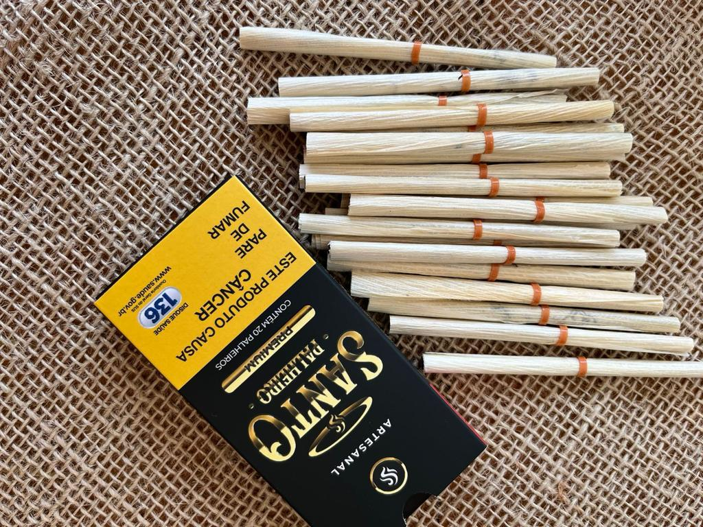

O Mito da "Palha Bonita"
Existe um consenso silencioso no mercado de palheiro artesanal que nunca foi questionado a sério: o de que palha boa é palha branquinha. Quanto mais clara, mais alva, mais brilhante — melhor. O fumante abre o maço, olha aquele cilindro quase branco, firme e lisinho, e sente que comprou qualidade.
Mas a verdade que poucos fabricantes têm coragem de dizer em voz alta é outra: a cor da palha de milho não tem absolutamente nada a ver com a qualidade da fumada. O que define se o palheiro vai queimar bem, se o trago vai ser limpo e se o fumante vai voltar para comprar o segundo maço não é a aparência — é a estrutura celular da palha, sua espessura, seu teor de umidade residual e, acima de tudo, a forma como ela interage com a brasa.
E é exatamente aí que a palha creme, levemente dourada e de toque macio, vence a branquinha de lavra — em todos os critérios que importam na hora de fumar.
⚠️ O Preconceito Que Custa Clientes
Fabricantes que escolhem palha apenas pela cor branca estão, sem perceber, empurrando o fumante para o concorrente. A aspereza e a queima irregular da palha branquinha fazem o cliente experimentar uma vez e nunca mais voltar — sem saber explicar por quê.
A Física da Queima: O Que Acontece Dentro do Palheiro
Para entender por que a palha creme é tecnicamente superior, precisamos abrir o palheiro na mesa e olhar para ele como um engenheiro olharia para uma câmara de combustão.
Quando você acende um palheiro, três processos acontecem simultaneamente:
- Pirólise da palha — a palha de milho se decompõe pelo calor, liberando gases e vapor d'água.
- Combustão do fumo — as fibras do tabaco queimam de forma mais lenta que a palha, mantendo a brasa viva.
- Ventilação transversal — o ar entra pelos microporos da palha e alimenta a brasa por dentro.
A palha branquinha, quase branca, normalmente passou por um processo de seleção visual extrema ou clareamento natural excessivo — folhas internas da espiga que mal viram sol, ou palhas secas ao ponto de perder quase toda a umidade residual. O resultado? Uma palha com estrutura celular rígida, fibras compactadas e muito pouca porosidade natural.
Na prática, o que isso significa para a fumada?
A brasa avança rápido demais pela palha — porque não encontra resistência úmida — queimando de forma desparelha. O fumante sente o gosto da palha no trago, porque a queima agressiva da celulose libera compostos amargos antes do fumo. A cinza se desfaz em flocos que caem no colo ou na roupa.
"O fumante não fuma a cor da palha. Ele fuma a queima. E queima boa é queima que ele nem percebe que está ali."
Já a palha creme — aquela levemente dourada, com toque acetinado e maleável — reteve o ponto exato de umidade celular que faz toda a diferença:
🔥 Brasa Sincronizada
A brasa avança no ritmo do fumo, não à frente dele. O fumante sente apenas o sabor do tabaco — a palha funciona como invólucro neutro, invisível no trago.
💨 Trago Limpo
O trago entrega primeiro o sabor do tabaco, sem interferência de celulose queimada. A fumaça é mais densa, redonda e aromática.
🪵 Cinza Firme
A cinza se forma firme e cilíndrica — o marcador visual de um palheiro premium. O fumante pode fumar com calma, sem cinza caindo a cada tragada.
A Textura na Boca: Onde o Preconceito Morre
A palha branquinha áspera tem uma textura que, ao lábio, lembra lixa fina. Para o fumante acostumado com cigarro industrializado — que tem filtro de acetato e papel ultrafino — essa aspereza causa desconforto imediato. Ele não consegue nomear o que incomoda. Só sabe que "esse palheiro é estranho" e não volta a comprar.
A palha creme macia, por outro lado, tem a superfície naturalmente acetinada. Ao toque dos lábios, ela se comporta quase como um canudo de papel vegetal: firme, mas suave. Essa diferença, que parece sutil na mão, é brutal na boca — especialmente em fumantes que estão migrando do cigarro branco para o palheiro.
"O primeiro contato do fumante com o palheiro é no lábio, não na brasa. Se a palha arranha, ele larga antes de sentir o fumo."

A Cor Não É Defeito — É Maturidade
Muitos fabricantes e até lojistas olham para uma palha creme e pensam: "essa palha está velha" ou "ficou no sol demais". É o contrário.
A tonalidade creme-dourada na palha de milho indica três coisas que só uma palha bem tratada apresenta:
1. Cura Natural Completa
A palha permaneceu na espiga ou na tulha pelo tempo certo, permitindo que os açúcares residuais se estabilizassem. É o mesmo princípio do fumo de corda curado em tulha: o tempo é ingrediente, não inimigo.
2. Desidratação Controlada
A palha perdeu água na velocidade ideal, sem rachar e sem ficar quebradiça. As fibras mantiveram a integridade estrutural — por isso ela dobra sem partir.
3. Fibras Relaxadas
As células vegetais não estão contraídas pelo excesso de secagem. Elas mantêm a maleabilidade e a microporosidade que garantem a ventilação ideal durante a queima.
A palha branquinha excessivamente clara muitas vezes é uma palha colhida precocemente — a folha interna da espiga que ainda não completou o ciclo de maturação do amido — ou uma palha seca artificialmente rápido para atender demanda de produção em escala. Bonita no maço, decepcionante na boca.
Comparativo Direto: Branquinha vs. Creme
Veja no quadro abaixo a diferença técnica e sensorial entre as duas opções:
| Critério | Palha Branquinha Áspera | Palha Creme Macia |
|---|---|---|
| Aparência | Quase branca, visual "limpo" | Creme-dourada, visual natural e nobre |
| Textura ao Toque | Áspera, rígida, estala ao dobrar | Acetinada, flexível, dobra sem partir |
| Sensação nos Lábios | Arranha e resseca o lábio | Macia, confortável, suave |
| Comportamento da Queima | Queima rápido e desparelha do fumo | Queima uniforme acompanhando o fumo |
| Sabor Residual | Gosto amargo de celulose queimada | Neutro — só o fumo aparece no trago |
| Formação de Cinza | Cinza frágil, esfarela e cai na roupa | Cinza firme, cilíndrica, "segura" |
| Umidade Celular | Muito baixa (palha ressecada) | No ponto ideal (cura natural) |
| Durabilidade no Estoque | Quebradiça com o tempo | Mantém maleabilidade por meses |
| Fidelização do Fumante | Experimenta uma vez e troca | Acostuma com a maciez e volta sempre |
O Teste do Balcão: Quem Vende Mais?
Se toda a ciência da combustão e da textura não convencer, o balcão da tabacaria convence. Fabricantes que migraram da palha branquinha para a creme relatam um padrão consistente:
O primeiro pedido vem igual — o lojista compra pelo preço e pela apresentação. Na reposição, o lojista nota que o maço de palha creme girou mais rápido. Na terceira compra, o lojista já pede só palha creme e não quer mais saber da branquinha.
O motivo é simples: o fumante que prova um palheiro com palha creme macia percebe, mesmo sem saber explicar, que o trago é mais limpo, que o palheiro não apaga à toa e que não fica aquele gosto amargo no fundo da boca. Ele volta. E quando o fumante volta, o lojista pede mais.
💡 Dica Para o Fabricante
Se você está começando a produzir palheiro artesanal, escolha a palha pela dobra e pela textura, não pela cor. Pegue a folha, dobre ao meio: se ela dobrar suave sem estalar, é a palha certa. Se rachar ou estalar seco, é a palha errada — por mais branca e "bonita" que pareça.
Quando a Palha Branquinha Faz Sentido
Para ser justo: existe um cenário onde a palha branquinha mais firme tem o seu lugar — no palheiro tipo industrial de produção em altíssimo volume, onde a enroladeira automática precisa de rigidez estrutural extra para manter o ritmo de 3.000 unidades por hora sem quebra. Nesses casos, a aspereza da palha é uma concessão técnica à velocidade de produção, não uma escolha sensorial.
Mas para o palheiro artesanal premium — aquele que é enrolado com cuidado, vendido em maço lacrado e consumido por quem escolheu fumar palha em vez de cigarro branco — a palha creme macia é, sem margem para discussão, a escolha certa.
Leia Também
→ Palha de Milho para Palheiro: Como Escolher a Ideal
→ Farelo Porto Faria vs. Blend Artesanal: O Segredo das Grandes Marcas
→ Por Que Meu Palheiro Apaga? Causas e Como Resolver
Quer Sentir a Diferença na Sua Produção?
Na 33 Tabaco, trabalhamos com palha de milho creme selecionada para enrolamento artesanal — além de fumo desfiado em blend nobre (Goiano, Mineiro e Arapiraca) e palheiros prontos das melhores marcas parceiras para revenda no atacado.
Atendimento direto com o Leonardo · Bebedouro/SP · Envio para todo o Brasil